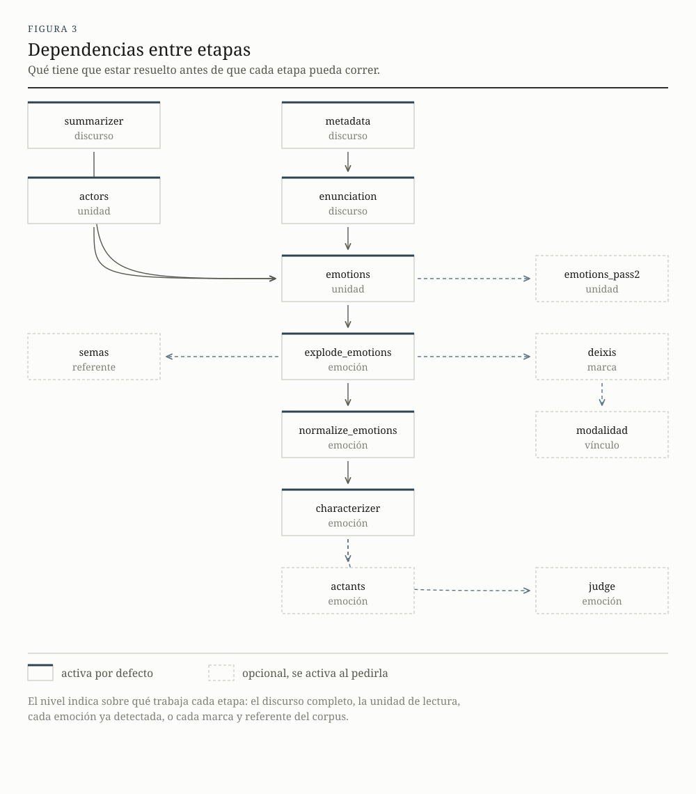
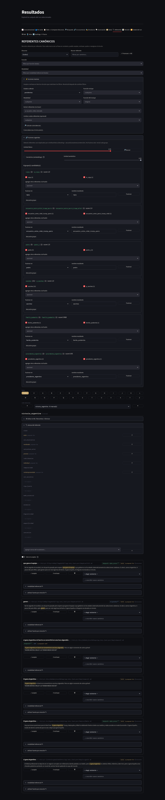

Cómo funciona
El análisis avanza por etapas encadenadas. Cada una resuelve una pregunta acotada, guarda su resultado y deja el terreno preparado para la siguiente. Se pueden correr todas de una vez o de a bloques, revisando lo que salió antes de seguir.
1Las etapas
Cada etapa trabaja sobre un nivel distinto del material. Algunas leen el discurso completo, otras van unidad por unidad, otras recorren emociones ya detectadas o actores ya identificados. Las etapas marcadas como opcionales se activan solo si se las pide.
| Etapa | Nivel | Qué resuelve | |
|---|---|---|---|
summarizer | discurso | Un resumen del texto completo, que después sirve de contexto a las demás etapas. | activa |
metadata | discurso | El tipo de discurso y el lugar, si el texto lo menciona. | activa |
enunciation | discurso | Quién habla, a quiénes se dirige, ante qué público y con qué colectivos se identifica. | activa |
actors | unidad | Los actores nombrados o deducibles: personas, colectivos, instituciones. | activa |
emotions | unidad | Primera lectura de emociones, unidad por unidad y de forma aislada. | activa |
emotions_pass2 | unidad | Segunda lectura, con las unidades anteriores del mismo discurso como contexto. | opcional |
explode_emotions | emoción | Separa cada emoción en su propia fila y siembra los vínculos entre marcas y referentes. Sin modelo. | activa |
deixis | marca | A quién remite cada «yo», «nosotros», «ustedes». | opcional |
modalidad | vínculo | De qué manera cada marca refiere a su referente. | opcional |
normalize_emotions | emoción | El nombre canónico de cada emoción, según la lista editable. | activa |
characterizer | emoción | Foria, dominancia, intensidad, duración, atribución, temporalidad y aspecto. | activa |
actants | emoción | Mediador, verificadores, operador de modificación y polaridad. | opcional |
judge | emoción | Un segundo modelo revisa la reconstrucción y propone correcciones acotadas. | opcional |
semas |
referente | Los rasgos semánticos de cada referente, tomados de un vocabulario curado . | activa |
Las dependencias entre etapas están declaradas. Pedir solo emotions
hace que el programa verifique antes que actors esté completa, y avise si no lo está.
La primera lectura de emociones analiza cada unidad por separado, sin ver lo que vino antes. La razón es evitar que una unidad cargada de indignación arrastre a la siguiente. La segunda lectura, opcional, vuelve sobre las mismas unidades con el contexto previo a la vista, para detectar continuidades, contrastes y escaladas. Cada emoción que agrega tiene que apoyarse en algo citable de la unidad actual.

2En qué se corta el texto
El modo de segmentar condiciona qué configuraciones emocionales resultan visibles. Cada género declara su unidad: los discursos presidenciales se cortan por frase, los posts se toman enteros, porque un post es de por sí una unidad breve.
El cortador de frases contempla las abreviaturas del español, junta oraciones muy cortas y parte las muy largas por punto y coma o por coma. Una emoción que solo se reconoce en la continuidad de varias frases puede perderse en una lectura frase por frase, y esa es la carencia que la segunda lectura intenta cubrir.
3Quién habla y a quiénes
Antes de buscar emociones, el sistema reconstruye la situación de enunciación, porque sin ella un «nosotros» no tiene a quién remitir y una emoción atribuida al público no se distingue de una atribuida a quien habla.
La reconstrucción se hace en dos pasos. Primero se resuelve el enunciador, la posición identificable con el «yo» del discurso. Un paso breve devuelve su denominación normalizada, «el presidente Javier Milei» pasa a «Javier Milei». Con esa posición ya fijada, un segundo paso identifica el resto: los enunciatarios con sus roles, el auditorio que efectivamente escucha, y los colectivos de identificación con los que el enunciador se inscribe («nosotros los peronistas»).
Cada una de esas posiciones se completa con un actor concreto, una persona, un colectivo o una institución, nunca con la etiqueta del rol. El rol va en un campo aparte.
El sistema guarda, por enunciador, el repertorio de colectivos con los que se identificó en discursos anteriores, y lo ofrece como contexto en corridas futuras. La instrucción incluye la libertad de proponer identificaciones nuevas cuando las conocidas no se ajustan, así que el repertorio orienta sin imponer.
4Marcas y referentes
Todas las expresiones que el análisis toca se registran en una base común de marcas. Una marca es una expresión situada en un lugar concreto del corpus: «Javier Milei», «ellos», «la casta», «tomamos». Las funciones que esa marca cumple, ser actor, ser quien siente, ser lo que desencadena, se guardan aparte, así que una misma expresión puede cumplir dos funciones sin duplicarse.
Cada marca se liga después a uno o más referentes canónicos: la unidad bajo la cual se agrupan las distintas expresiones que remiten a lo mismo. «El presidente», «Milei» y «el jefe de Estado» pueden converger en un solo referente, y a partir de ahí las cuentas del corpus dejan de estar fragmentadas.
El agrupamiento es automático y se apoya en cuatro procedimientos, ninguno de los cuales consume tiempo de modelo: coincidencia léxica entre expresiones, la inferencia que el propio modelo produjo al detectar el actor, la resolución de la primera persona hacia el enunciador, y la coincidencia con una base de referentes ya conocidos. La regla es deliberadamente cautelosa. Es preferible que queden casi duplicados sin unir, para que alguien los resuelva, antes que se fusionen dos referentes distintos y se borre una distinción que el corpus sostenía.
Deixis
Palabras como «yo», «nosotros» o «ustedes» refieren sin nombrar, y por eso la coincidencia léxica no puede resolverlas: «nosotros» no comparte ninguna letra con «argentinos». Una etapa opcional toma el enunciador, el auditorio y los colectivos ya identificados y asigna cada una de esas marcas a referentes concretos. La asignación puede ser múltiple, porque «nuestro equipo» puede remitir a la vez a quien habla y al colectivo con el que se identifica.
De qué manera refiere una marca
Otra etapa opcional clasifica el modo en que cada marca refiere a su referente, en un eje independiente de si el vínculo se acepta o se rechaza. Una marca puede designar al referente con un nombre o un sustantivo («Javier Milei», «el presidente de la Nación»), referirlo gramaticalmente sin nombrarlo («yo», «he defendido»), o identificarlo por inferencia a partir de la actitud que expresa: «ellos son la casta corrupta» identifica a quien habla como quien sostiene esa posición, aunque no lo nombre.
La clasificación es por vínculo y no por marca, porque un mismo sintagma puede designar a un referente e identificar por inferencia a otro. Tenerla permite conservar el vínculo, sin perder a quien siente la emoción, y a la vez filtrar solo las designaciones para estudiar cómo el discurso construye sus objetos.
El procedimiento combina dos recursos. Un análisis gramatical resuelve los casos claros de manera barata y precisa: los pronombres y las formas verbales van a referencia gramatical, los nombres propios a designación. El modelo de lenguaje interviene solo en los casos ambiguos, los sintagmas de nombre común que pueden ser una denominación o un epíteto valorativo.
5La revisión humana
La revisión es parte del método y ocupa una porción sustantiva del tiempo de trabajo. Con cientos o miles de vínculos, revisar uno por uno no alcanza, así que el tablero ofrece dos herramientas para hacerlo a escala.
Acciones en lote. Aceptan o rechazan de una vez todos los vínculos que cumplan un filtro combinado: el estado actual, el modo de referencia, la función, con la posibilidad de excluir («que no incluya fuente»), y los referentes a incluir o dejar afuera. El resultado se calcula al pulsar un botón, y el rechazo pide confirmación.
Fusiones sugeridas. Como el agrupamiento automático es cauteloso, quedan casi duplicados: «sociedad humana», «sociedad humanidad», «sociedad humana humanidad». Un detector los propone agrupados, sin usar modelos de lenguaje. Compara solo los referentes que comparten alguna palabra significativa, mide el parecido entre ellos por las palabras en común y por la inclusión de un conjunto en otro, y opcionalmente agrega un parecido de significado que capta sinónimos sin letras compartidas. Cada grupo propuesto se revisa y se fusiona a mano, o se descarta.

Cuando una unidad tiene varias emociones que comparten la marca de quien las siente, la atribución se puede hacer emoción por emoción: fijar la indignación en un referente y dejar el miedo en otro, sin arrastrar una con la otra. Si se atribuye más de un experienciador a la misma emoción, esta se desdobla en una emoción por referente, y cada una queda con su propio grado de realización. Varias fuentes, en cambio, conviven en una sola.
Las correcciones se guardan en un archivo aparte que se aplica por encima al leer. Los borrados se pueden revertir y la escritura conserva una copia de respaldo. Un botón explícito materializa lo revisado en la base y vuelve a marcar como pendientes las etapas posteriores que dependían de lo que cambió.
6Cuatro capas de control
La salida del modelo pasa por controles sucesivos, cada uno de los cuales atrapa lo que el anterior no puede ver.
- Forma
- La restricción sobre la generación garantiza que la ficha esté completa, con los campos previstos y sin campos de más. Un resultado mal formado no puede producirse.
- Tipo
- Cada etapa verifica lo que recibe y lo que entrega contra un contrato declarado: qué columnas tienen que estar, de qué tipo, con qué valores admisibles. Ahí se detectan los errores de encastre entre etapas.
- Coherencia semiótica
- Un conjunto de reglas declaradas revisa las combinaciones que el marco teórico no admite, sin recurrir a ningún modelo. Cada incidencia queda registrada para que alguien decida si corresponde a un error del sistema o a un fenómeno que la regla no preveía.
- Segunda lectura por otro modelo
- Un paso opcional pone a un segundo modelo a revisar la reconstrucción, con el contexto del discurso y una ventana de unidades vecinas.
Algunas de las reglas
| Regla | Qué señala |
|---|---|
| V01 | Una emoción presentada como posible no puede tener a quien habla como quien la siente. |
| V02 | Una fuente sin identificar junto a una intensidad alta indica tensión en la lectura. |
| V04 | Una emoción sin orientación de valor no puede tener intensidad alta. |
| V06 | Una emoción virtual y sin orientación de valor es contradictoria. |
| V09 | La misma emoción del mismo actor aparece dos veces en la misma unidad. |
| V11 | La emoción detectada no figura en la lista de categorías, o viola sus restricciones. |
El alcance del segundo modelo está acotado adrede. Corrige quién siente la emoción, de qué tipo es, qué la desencadena, en qué grado se realiza, cuándo ocurre y su configuración relacional. Deja sin tocar la foria, la dominancia, la intensidad, la duración y la atribución.1
7Medir la validez
La cuarta instancia de control es humana, y funciona como un circuito completo de cuatro pasos.
- Muestra a ciegas. El sistema exporta una planilla con una selección equilibrada de unidades, la mitad con detección y la mitad sin ella, mezcladas y sin ninguna salida del modelo a la vista. Se reparte una copia por anotador.
- Acuerdo entre anotadores. Con las planillas completas, el programa calcula cuánto coinciden las personas entre sí, dimensión por dimensión, con una medida estándar que descuenta el acuerdo esperable por azar. Un valor por encima de 0,8 se considera confiable; entre 0,667 y 0,8, tentativo; por debajo, conviene revisar el manual de anotación antes de atribuirle el problema al modelo.2
- Conjunto de referencia. De resolver los desacuerdos sale un conjunto de casos con respuesta acordada, versionado. Comparar cada corrida contra él informa cuántas emociones se detectaron correctamente, cuántas se pasaron por alto y cuántas se inventaron, más el acierto en cada dimensión.
- Control de sobredetección. Una corrida sobre textos administrativos sin carga emocional estima con qué frecuencia el modelo detecta emociones donde no las hay.
Cada modificación de una instrucción o de una lista de categorías se convierte así en un experimento con resultado medible.
8Interrumpir y retomar
Analizar un corpus grande lleva horas. El proceso se puede cortar y retomar: lo que ya terminó queda registrado como completo y no se vuelve a procesar. Las unidades que fallaron quedan marcadas aparte y se reintentan solas, con reglas configurables sobre qué reintentar y cuántas veces.
Las respuestas ya obtenidas se guardan en una memoria interna cuya clave incluye las versiones de las instrucciones, de las listas de categorías y de los formatos de salida. Cambiar solo una instrucción invalida únicamente lo que dependía de ella, y el resto del trabajo se conserva.
Notas
- La razón es teórica. En las dimensiones donde el abanico de lecturas admisibles es amplio, pedirle a un segundo modelo que corrija al primero reproduce un sesgo conocido, denominado anchoring: el juicio se desplaza hacia el valor que se le presentó de antemano, sin que haya un criterio más firme para dirimir entre lecturas igualmente aceptables. La corrección se reserva para los casos donde tiene sentido exigir acierto, como una atribución equivocada por discurso referido, una ironía no reconocida o una polaridad invertida. ↩
- La medida es el alfa de Krippendorff . La implementación es propia, sin dependencias externas, admite datos faltantes y está verificada contra los valores publicados del ejemplo canónico. ↩